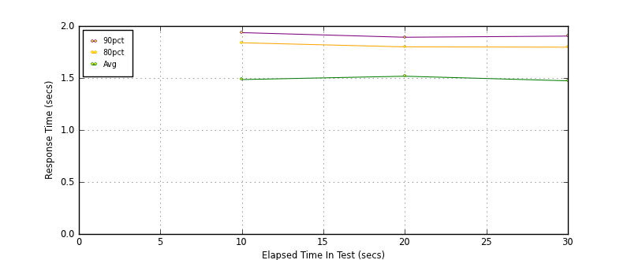
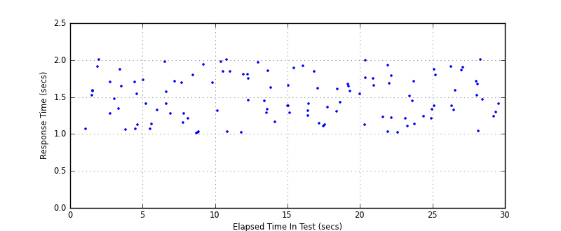
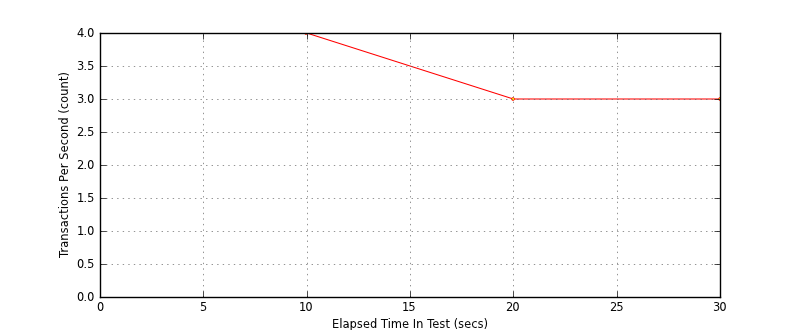
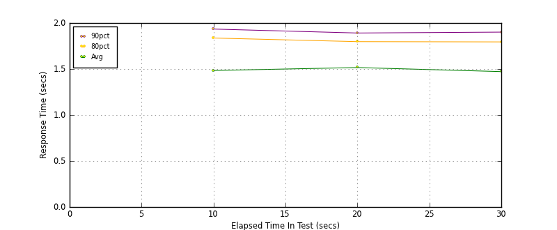
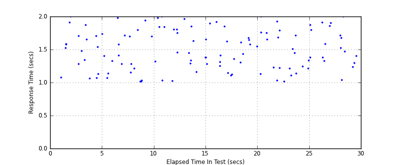

Performance Results Report
Summary
transactions: 122
errors: 0
run time: 30 secs
rampup: 0 secs
test start: 2012-07-19 09:13:28
test finish: 2012-07-19 09:13:57
time-series interval: 10 secs
workload configuration:
| group name | threads | script name |
|---|
| user_group-1 | 3 | v_user.py |
| user_group-2 | 3 | v_user.py |
All Transactions
Transaction Response Summary (secs)
| count | min | avg | 80pct | 90pct | 95pct | max | stdev |
|---|
| 122 | 1.009 | 1.492 | 1.796 | 1.904 | 1.976 | 2.000 | 0.298 |
Interval Details (secs)
| interval | count | rate | min | avg | 80pct | 90pct | 95pct | max | stdev |
|---|
| 1 | 43 | 4.30 | 1.009 | 1.485 | 1.839 | 1.936 | 1.976 | 2.000 | 0.326 |
| 2 | 39 | 3.90 | 1.022 | 1.517 | 1.799 | 1.892 | 1.963 | 1.997 | 0.271 |
| 3 | 34 | 3.40 | 1.014 | 1.473 | 1.796 | 1.903 | 1.925 | 2.000 | 0.296 |
Graphs
Response Time: 10 sec time-series

Response Time: raw data (all points)

Throughput: 5 sec time-series

Custom Timer: Example_Timer
Timer Summary (secs)
| count | min | avg | 80pct | 90pct | 95pct | max | stdev |
|---|
| 116 | 1.008 | 1.491 | 1.795 | 1.902 | 1.974 | 2.000 | 0.297 |
Interval Details (secs)
| interval | count | rate | min | avg | 80pct | 90pct | 95pct | max | stdev |
|---|
| 1 | 43 | 4.30 | 1.008 | 1.484 | 1.837 | 1.934 | 1.975 | 1.998 | 0.326 |
| 2 | 39 | 3.90 | 1.021 | 1.516 | 1.797 | 1.891 | 1.961 | 1.995 | 0.270 |
| 3 | 34 | 3.40 | 1.013 | 1.472 | 1.795 | 1.901 | 1.924 | 2.000 | 0.296 |
Graphs
Response Time: 10 sec time-series

Response Time: raw data (all points)

Throughput: 10 sec time-series